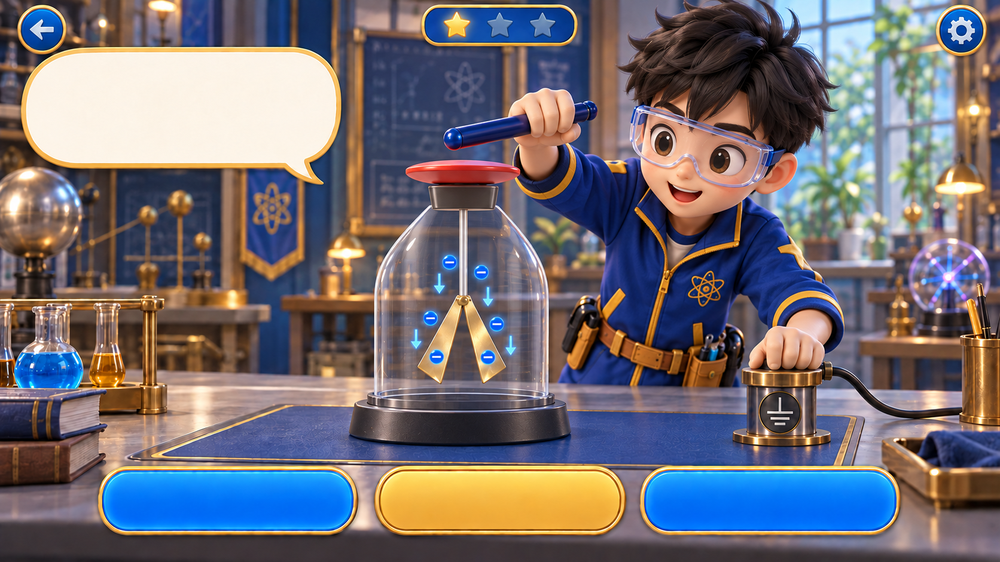

物理系研究基地 · 01
不碰它，
也能留下電荷？
把看不見的電子，變成你看得懂的實驗。
拿起負電棒，從第一個發現開始。

任務 01 · 感應
金箔張開，就代表帶電嗎？
先把負電棒拖到圓盤左側的光圈。記得保留空隙，不要接觸。
先預測：棒不碰到圓盤，金箔會不會張開？
- 1靠近負電棒
- 2接地
- 3先斷地
- 4再移棒
即時觀察負電棒：遠離接地：已斷開
− 藍色＝電子，可移動+ 橘色＝固定正電荷
用手拖曳，或按「靠近負電棒」。兩種方式都能完成實驗。
驗電器淨電荷0 電中性正電荷總數 − 電子總數
金箔狀態閉合左 0 ／ 右 0
驗電器內的電子12個沒有電子進出
觀察之後，留下你的解釋
現在驗電器的總電荷是？
完成上方操作，就能選擇答案。
觀察筆記把現象和電荷總量一起看
驗電器 0＋地面 0＝ 0
電荷數字是方便數得出來的示意單位，不是庫侖讀值。正電荷固定在導體上；只有電子重新分布或經接地線移動。玻璃瓶與絕緣塞不提供電子通路。